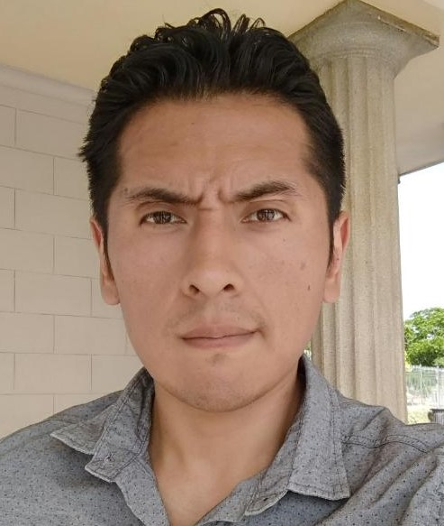
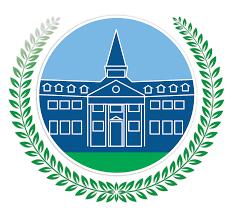
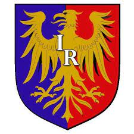

Acerca de:
Acerca de: Soy un profesor de Inglés. Estudiante de programación Full Stack Junior y C#. Desarollador de videojuegos en Unity, y creador de contenido audiovisual.
Experiencia:
-
QA tester
Pasante de QA testing para Gameloft Argentina
Desde el 06/05 Al - 07/05
-
Técnico en soporte IT
Soporte técnico de telefonía IP e Internet para Telmex Argentina y Next Argentina
Desde el 02/07 Al - 05/09
-
Técnico en reparación de PC
Reparación de Hardware y mantenimiento/soporte de Software.
Desde el 11/2015 - Actual
-
Artista 2D freelance
Diseño gráfico y animación 2D freelance.
Desde el 04/19- Actual
-
Profesor de Inglés
Profesor de Inglés ESL para la DGCyE de nivel primario y secundario
Desde el 05/10 - Actual
Educación:
-

Educación Primaria - EP°22
Educación primaria EGB. José C. Paz. Bs. As.
Egreso: 1999
-
Educación Secundaria - ES N°5
Bachiller en Humanidades y Ciencias Sociales. José C. Paz. Bs. As.
Egreso: 2004
-
Profesorado de Inglés - ISFD N°21
Profesorado de Inglés para nivel primario y secundario. Moreno. Bs. As.
Egreso: 2018
-

Diseñador Gráfico - Instituto Rivadavia
Formación en Diseño Gráfico
Egreso: 2017
-
Técnico en reparación de PC - Instituto Rivadavia
Formación en armado y reparación de PC
Egreso: 2015
-

Programador FullStack jr. - Argentina Programa
Formación en lenguajes Html, Js, Ruby. Buenas prácticas, Frontend y Backend.
Egreso: En curso
-
Programador FullStack jr. - ONE Oracle
Formación en lenguajes Html, Js, Ruby. Buenas prácticas, Frontend y Backend.
Egreso: En curso
-
Desarollador de Videojuegos en Unity - Udemy
Formación en manejo de Unity y lenguajes C#, Js.
Egreso: 2021
Hard & Soft Skills
Acerca de: Soy un profesor de Inglés. Estudiante de programación Full Stack Junior y C#. Desarollador de videojuegos en Unity, y creador de contenido audiovisual.
Proyectos:
-
QA tester
Pasante de QA testing para Gameloft Argentina
Desde el 06/05 Al - 07/05
-
Técnico en soporte IT
Soporte técnico de telefonía IP e Internet para Telmex Argentina y Next Argentina
Desde el 02/07 Al - 05/09
-
Técnico en reparación de PC
Reparación de Hardware y mantenimiento/soporte de Software.
Desde el 11/2015 - Actual
-
Artista 2D freelance
Diseño gráfico y animación 2D freelance.
Desde el 04/19- Actual
-
Profesor de Inglés
Profesor de Inglés ESL para la DGCyE de nivel primario y secundario
Desde el 05/10 - Actual
-
Inglés